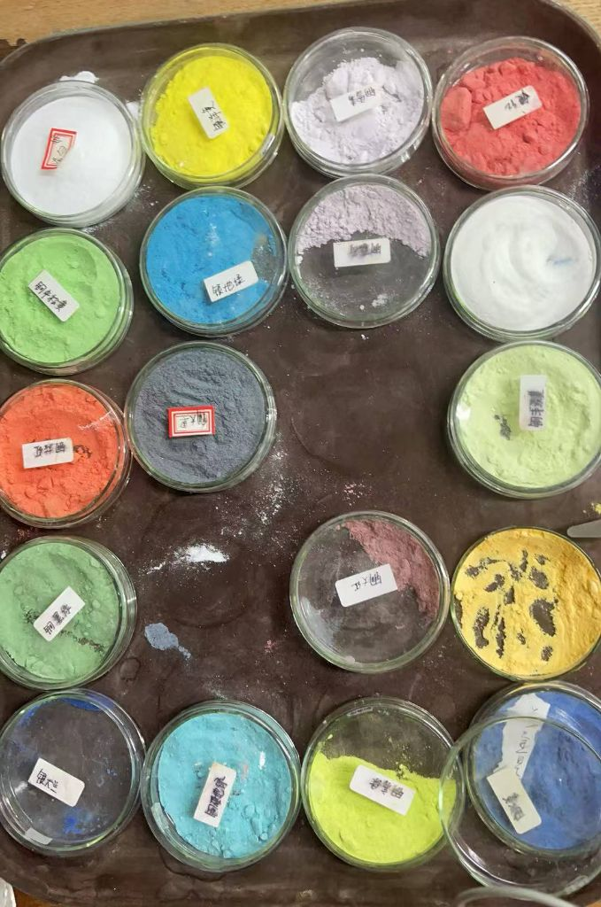

A Collection of Explorations in Metalwork: A Study of the Tension Between Materials and Craftsmanship.
A craft exploration project documenting the tension between materials and craftsmanship in metalwork. The work investigates how metal's inherent properties — hardness, malleability, reflectivity — interact with handcraft processes, and how that friction becomes a generative creative force.